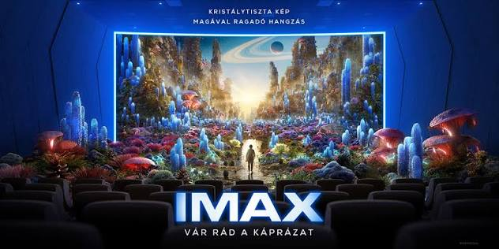

Modern cinema

„A mozifilm olyan, mint az élet, csak hiányoznak belőle az unalmas részek.”
— Alfred Hitchcock
A kortárs mozi a prémium technológiai infrastruktúra, például az IMAX vagy a Dolby Atmos által kiváltott magas ingerintenzitású szenzoros elmerülés révén a globális piacon 30 és 40 milliárd dollár közötti közvetlen jegyárbevételt ér el. A teljes mozis infrastruktúrával együtt a gazdasági érték a 70 milliárd dollárt is meghaladja. Az izolált streaming alapú digitális fogyasztással szemben a közösségi jelenlét az érzelmi rezonancia fizikai platformjaként működik. Az elsődleges mozis forgalmazás biztosítja a filmalkotások intézményi rangját és kulturális értékeinek elismerését. A történetekben való mély elmerülés által nyújtott kikapcsolódás olyan egyedülálló élményt teremt, amely a prémium vetítésekkel kiegészülve a digitális applikációk korában is garantálja a moziipar fenntartható sikerét.